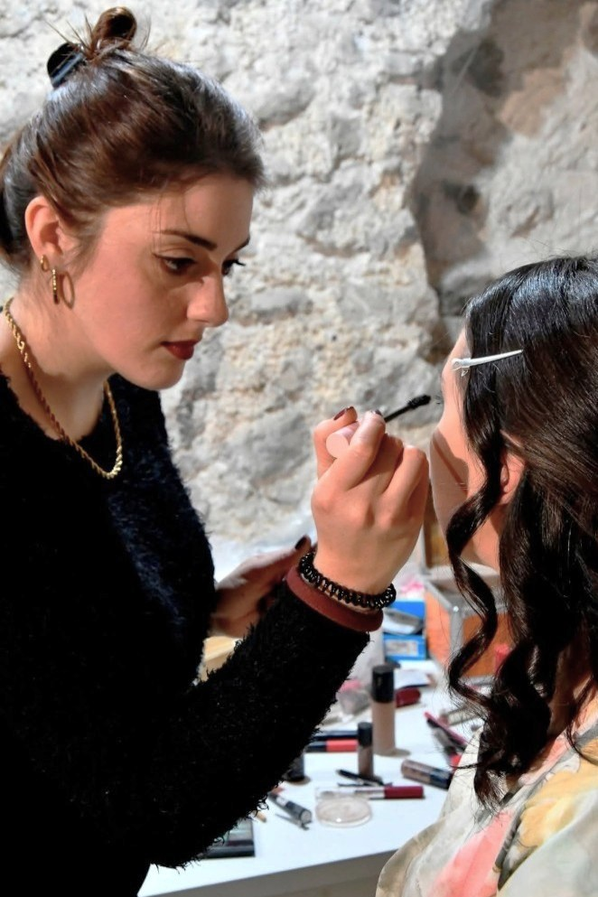

About
Osservo, organizzo e progetto esperienze digitali..
Mi chiamo Ilaria Mansi e mi occupo di UX/UI design. Mi interessa capire come le persone attraversano un'esperienza, individuare ciò che crea attrito e trasformarlo in qualcosa di più chiaro e semplice da usare.


Negli anni ho lavorato in contesti diversi, tra eventi culturali, organizzazione e attività creative. Sono esperienze che mi hanno insegnato a prestare attenzione alle persone, ai dettagli e al modo in cui viene vissuta un'esperienza.
Suono il pianoforte dall'età di nove anni e faccio teatro. Fuori dal digitale mi piace dedicare tempo a progetti manuali, cucito, fotografia, arte, passeggiate nella natura e spazi ben progettati.
Sono interessi diversi, ma hanno qualcosa in comune: mi portano a osservare. Credo che gran parte del mio approccio al design nasca proprio da qui, dalla curiosità verso il modo in cui le persone vivono gli spazi, gli oggetti e le esperienze che le circondano.
Oggi porto questo sguardo nei progetti digitali, cercando di costruire interfacce chiare, curate e semplici da usare.
Cerco un contesto in cui continuare a imparare, collaborare e progettare esperienze che abbiano davvero senso per chi le utilizza.